List of boroughs and census areas in Alaska
| Boroughs and Census Areas of Alaska | |
|---|---|

| |
| Location | State of Alaska |
| Number | 19 organized boroughs 11 census areas |
| Populations | (Organized boroughs): 662 (Yakutat) – 291,247 (Anchorage) (Census areas): 2,365 (Hoonah-Angoon) – 18,666 (Bethel) |
| Areas | (Organized boroughs): 434 square miles (1,120 km2) (Skagway) – 88,824 square miles (230,050 km2) (North Slope) (Census areas): 4,393 square miles (11,380 km2) (Aleutians West) – 145,576 square miles (377,040 km2) (Yukon-Koyukuk) |
| Government | |
| Subdivisions |
|
The U.S. state of Alaska is divided into 19 organized boroughs and one Unorganized Borough. Alaska and Louisiana are the only states that do not call their first-order administrative subdivisions counties (Louisiana uses parishes instead).[1] Delegates to the Alaska Constitutional Convention wanted to avoid the traditional county system and adopted their own unique model with different classes of boroughs varying in powers and duties.[2]
Many of the most densely populated regions of the state are part of Alaska's boroughs, which function similarly to counties in other states. However, unlike county-equivalents in the other 49 states, the organized boroughs do not cover the entire land area of the state. There are four different classes of organized boroughs: "Unified Home Rule" (may exercise all legislative powers not prohibited by law or charter); "Non-unified Home Rule"; "First Class" (may exercise any power not prohibited by law on a non-area wide basis by adopting ordinances); and "Second Class" (must gain voter approval for authority to exercise many non-area wide powers).[3]
The area not part of any organized borough is referred to as the Unorganized Borough. The U.S. Census Bureau, in cooperation with the state, divides the Unorganized Borough into 11 census areas, each roughly corresponding to an election district, thus totaling 30 county equivalents. However, these areas exist solely for the purposes of statistical analysis and presentation; they have no government of their own. Boroughs and census areas are both treated as county-level equivalents by the Census Bureau.
Some areas in the unorganized borough receive limited public services directly from the Alaska state government, usually law enforcement from the Alaska State Troopers and educational funding.
Six consolidated city-borough governments exist—Juneau City and Borough, Skagway Municipality, Sitka City and Borough, Yakutat City and Borough, Wrangell City and Borough, as well as the state's largest city, Anchorage. Though its legal name is the Municipality of Anchorage, it is considered a consolidated city-borough under state law.
The Federal Information Processing Standard (FIPS) 55-2,3,4 codes, which are used by the United States Census Bureau to uniquely identify states and counties, is provided with each entry.[4] Alaska's code is 02, so each code is of the format 02XXX. The FIPS code for each county equivalent links to census data for that county equivalent. There are 30 divisions in Alaska.
List of boroughs[edit]
| Borough |
FIPS code[5] | Borough seat[6] | Class [7][8][9] |
Est.[6] | Origin | Etymology | Density |
Population[10] | Area[11] | Map |
|---|---|---|---|---|---|---|---|---|---|---|
| Aleutians East Borough | 013 | Sand Point | Second | 1987 | - | Its location in the east Aleutian Islands, which are themselves of uncertain linguistic origin; possibly derived from Chukchi word aliat ("island") | 0.49 | 3,420 | 6,985 sq mi (18,091 km2) |

|
| Anchorage | 020 | (Consolidated city-borough) |
Unified Home Rule | 1964/1975 | Anchorage Borough formed in 1964, merged with city in 1975 to form unified city-borough | Derived from the presence of a safe place to anchor and unload supplies for construction of the Alaska Railroad circa 1913, thereby creating a community. | 170.62 | 291,247 | 1,707 sq mi (4,421 km2) |

|
| Bristol Bay Borough | 060 | Naknek | Second | 1962 | - | Named in 1778 by Capt. James Cook for George Digby, 2nd Earl of Bristol. | 1.75 | 844 | 482 sq mi (1,248 km2) |

|
| Denali Borough | 068 | Healy | Home Rule | 1990 | - | From Denali, the tallest North American mountain, which means "great one" in the Dena'ina language | 0.13 | 1,619 | 12,641 sq mi (32,740 km2) |
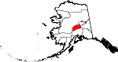 |
| Fairbanks North Star Borough | 090 | Fairbanks | Second | 1964 | - | Named for its borough seat of Fairbanks, named in turn for Charles Fairbanks (1852 - 1918), U.S. Senator from Indiana and vice president under Theodore Roosevelt, and for Polaris, the North Star | 13.04 | 95,655 | 7,335 sq mi (18,998 km2) |
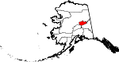 |
| Haines Borough | 100 | (Consolidated city-borough) |
Home Rule | 1968 (Consolidated 2002) |
- | After Haines, which was itself named for Mrs. F.E. Haines, the key fundraiser for the construction of a Presbyterian mission in the town. | 0.89 | 2,080 | 2,343 sq mi (6,068 km2) |

|
| Juneau | 110 | (Consolidated city-borough) |
Unified Home Rule | 1970 | The cities of Juneau and Douglas merged with the surrounding borough to form the municipality | Joseph "Joe" Juneau, prospector and co-founder of the city. | 11.93 | 32,255 | 2,704 sq mi (7,003 km2) |
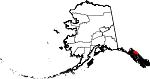 |
| Kenai Peninsula Borough | 122 | Soldotna | Second | 1964 | - | The Kenai Peninsula, whose name may be derived from Kenayskaya, the Russian name for Cook Inlet. | 3.67 | 58,799 | 16,017 sq mi (41,484 km2) |
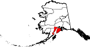 |
| Ketchikan Gateway Borough | 130 | Ketchikan | Second | 1963 | - | The borough seat of Ketchikan and the borough's gateway location on the Alaska-Canada border. | 2.87 | 13,948 | 4,857 sq mi (12,580 km2) |

|
| Kodiak Island Borough | 150 | Kodiak | Second | 1963 | - | Named after Kodiak Island, which may itself be named for the Koniag people | 1.96 | 13,101 | 6,689 sq mi (17,324 km2) |

|
| Lake and Peninsula Borough | 164 | King Salmon | Home Rule | 1989 | - | The borough's many large lakes, and the Alaska Peninsula | 0.06 | 1,476 | 23,832 sq mi (61,725 km2) |

|
| Matanuska-Susitna Borough | 170 | Palmer | Second | 1964 | - | Named for the valley that the Matanuska and Susitna Rivers form. | 4.33 | 107,081 | 24,707 sq mi (63,991 km2) |
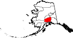 |
| North Slope Borough | 185 | Utqiaġvik | Home Rule | 1972 | - | The Alaska North Slope along the Brooks Range. | 0.12 | 11,031 | 88,824 sq mi (230,053 km2) |
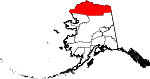 |
| Northwest Arctic Borough | 188 | Kotzebue | Home Rule | 1986 | In 1986, residents of Kotzebue and 10 other area villages voted to form the Northwest Arctic Borough (with boundaries coincident with those of NANA), to be economically based on taxing the Red Dog mine, then under development. | Its geographic location and position above the Arctic Circle. | 0.22 | 7,793 | 35,663 sq mi (92,367 km2) |
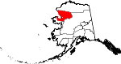 |
| Petersburg Borough | 195 | Petersburg | Home Rule | 2013 | Incorporated after voters approved borough formation in December 2012. | Named for Norwegian immigrant Peter Buschmann, founder of the former city of Petersburg. | 1.17 | 3,398 | 2,901 sq mi (7,514 km2) |
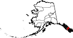 |
| Sitka | 220 | (Consolidated city-borough) |
Unified Home Rule | 1971 | - | Derived from Tlingit word Shee At'iká, meaning "People on the outside of Shee (Baranof Island)." | 2.95 | 8,458 | 2,870 sq mi (7,433 km2) |
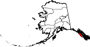 |
| Skagway | 230 | (Consolidated city-borough) |
First | 2007 | - | Derived from Tlingit word Shgagwèi, meaning "a windy place with white caps on the water." | 2.86 | 1,240 | 434 sq mi (1,124 km2) |
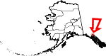 |
| Unorganized Borough | - | - | - | 1961 | The Borough Act of 1961 created The Unorganized Borough including all of Alaska not within a Unified, Home rule, First class or Second class borough. | A legal entity in Alaska, covering those parts of Alaska not within an incorporated borough; it is directly administered by the State of Alaska.[12] | 0.24 | 77,157 | 319,852 sq mi (828,413 km2) |

|
| Wrangell | 275 | (Consolidated city-borough) |
Unified Home Rule | 2008 | formerly part of Wrangell-Petersburg Census Area | Ferdinand von Wrangel, Russian administrator of Alaska, 1840-49. | 0.83 | 2,127 | 2,556 sq mi (6,620 km2) |

|
| Yakutat | 282 | (Consolidated city-borough) |
Home Rule | 1992 | - | Yakutat Bay and the Yakutat Alaska Native people | 0.09 | 662 | 7,623 sq mi (19,743 km2) |

|
Census areas in the Unorganized Borough[edit]
The Unorganized Borough is the portion of the U.S. state of Alaska not contained in any of its 19 organized boroughs. While referred to as the "Unorganized Borough", it is not a borough itself. It encompasses over half of Alaska's area, 970,500 km2. If the unorganized Borough were a state in itself, it would be the largest state in the United States of America, larger than the rest of Alaska and larger than Texas or California. (374,712 mi2). As of the 2020 census, 10% of Alaskans (77,157 people) reside in it.
Currently unique among the United States, Alaska is not entirely subdivided into organized county equivalents. For the 1980 census, the United States Census Bureau divided the unorganized borough into 12 census areas to facilitate census taking in the vast unorganized area. As new boroughs incorporate, these areas have been altered or eliminated to accommodate,[13] such that there are currently 11 census areas:
| Census area |
FIPS code[5] | Largest town (as of 2000) |
Etymology | Density |
Population[10] | Area[11] | Map |
|---|---|---|---|---|---|---|---|
| Aleutians West Census Area | 016 | Unalaska | Location in the western Aleutian Islands. | 1.19 | 5,232 | 4,393 sq mi (11,378 km2) |
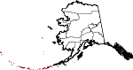 |
| Bethel Census Area | 050 | Bethel | City of Bethel, the largest settlement in the census area, which is itself named for the Biblical term Bethel ("house of God"). | 0.46 | 18,666 | 40,627 sq mi (105,223 km2) |

|
| Chugach Census Area | 063 | Valdez | The Chugach people (Part of Valdez–Cordova Census Area prior to January 02, 2019) [14][15] |
0.75 | 7,102 | 9,530 sq mi (24,683 km2) |

|
| Copper River Census Area | 066 | Glennallen | The Copper River (Part of Valdez–Cordova Census Area prior to January 02, 2019) [14][15] |
0.11 | 2,617 | 24,692 sq mi (63,952 km2) |

|
| Dillingham Census Area | 070 | Dillingham | The city of Dillingham, the largest settlement in the area, which was itself named after United States Senator Paul Dillingham (1843-1923), who had toured Alaska extensively with his Senate subcommittee in 1903. | 0.26 | 4,857 | 18,334 sq mi (47,485 km2) |
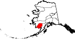 |
| Hoonah–Angoon Census Area | 105 | Hoonah | The cities of Hoonah and Angoon | 0.36 | 2,365 | 6,555 sq mi (16,977 km2) |
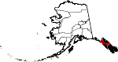 |
| Kusilvak Census Area | 158 | Hooper Bay | Kusilvak Mountains (Known as Wade Hampton prior to 2015) |
0.49 | 8,368 | 17,077 sq mi (44,229 km2) |
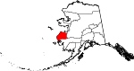 |
| Nome Census Area | 180 | Nome | City of Nome, the largest settlement in the census area. | 0.44 | 10,046 | 22,969 sq mi (59,489 km2) |
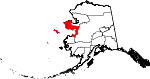 |
| Prince of Wales-Hyder Census Area | 198 | Craig | Prince of Wales Island and the town of Hyder (Known as Prince of Wales-Outer Ketchikan prior to the expansion of Ketchikan Gateway Borough in 2008) |
1.09 | 5,753 | 5,268 sq mi (13,644 km2) |

|
| Southeast Fairbanks Census Area | 240 | Deltana | Its location, southeast of Fairbanks | 0.27 | 6,808 | 24,831 sq mi (64,312 km2) |
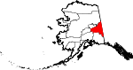 |
| Yukon-Koyukuk Census Area | 290 | Fort Yukon | Yukon River ("great river" in Gwich’in), which flows through the census area; and the city of Koyukuk | 0.04 | 5,343 | 145,576 sq mi (377,040 km2) |
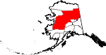 |
See also[edit]
- List of cities in Alaska
- List of census-designated places in Alaska
- List of United States counties and county equivalents
References[edit]
- ^ "Alaska Population Estimates". Alaska Department of Labor and Workforce Development. Retrieved 2020-03-01.
- ^ "Local Government". Alaska Humanities Forum. Retrieved 2021-11-04.
- ^ Alaska Municipal League: Alaska Local Government Primer
- ^ "FIPS Publish 6-4". National Institute of Standards and Technology. Archived from the original on 2013-09-29. Retrieved 2007-04-11.
- ^ Jump up to: a b "EPA County FIPS Code Listing". EPA.gov. Retrieved 2008-02-23.
- ^ Jump up to: a b "Find A County". National Association of Counties. Archived from the original on 2013-04-16. Retrieved 2012-04-07.
- ^ "Municipal Certificates". Local Boundary Commission, Division of Community and Regional Affairs, Alaska Department of Commerce, Community and Economic Development. Retrieved 2018-01-05.
- ^ "Alaska Taxable 2004 Municipal Taxation - Rates and Policies" (PDF). Division of Community and Regional Affairs, Alaska Department of Commerce, Community and Economic Development. January 2005. Archived from the original (PDF) on 2008-09-09. Retrieved 2008-07-16.
- ^ "Background on Boroughs in Alaska" (PDF). Local Boundary Commission, Division of Community and Regional Affairs, Alaska Department of Commerce, Community and Economic Development. November 2000. Retrieved 2008-07-16.
- ^ Jump up to: a b "U.S. Census Bureau QuickFacts: Alaska". Retrieved 2021-09-03.
- ^ Jump up to: a b "TIGERweb". US Census. Retrieved 2020-03-01.
- ^ "Governmental Unit Boundary Data Content Standard (Working Draft, Version 2.0)" (PDF). Subcommittee on Cultural and Demographic Data, Federal Geographic Data Committee, United States Census Bureau, United States Department of Commerce. February 1999. Retrieved 2008-07-16.
- ^ "Substantial Changes to Counties and County Equivalent Entities: 1970-Present". United States Census Bureau.
- ^ Jump up to: a b c Bureau, US Census. "Changes to Counties and County Equivalent Entities: 1970-Present". The United States Census Bureau. Retrieved 29 February 2020.
- ^ Jump up to: a b "Alaska Population Estimates". Alaska Department of Labor and Workforce Development. Retrieved 2020-03-01.
- Alaska Department of Labor and Workforce Development - maps and profiles of boroughs and census areas, including those that have changed since the 2000 census
Other sources[edit]
- Division of Community and Regional Affairs, Alaska Department of Commerce, Community and Economic Development
- Local Government On-Line, Division of Community and Regional Affairs, Alaska Department of Commerce, Community and Economic Development
- "Alaska Statutes, Title 29, Chapter 04. Classification of Municipalities" (PDF). Local Government On-Line, Division of Community and Regional Affairs, Alaska Department of Commerce, Community and Economic Development. 2006. p. 17. Retrieved 2018-01-05.
- "Municipal Government Structure in Alaska". Local Government On-Line, Division of Community and Regional Affairs, Alaska Department of Commerce, Community and Economic Development. 2003-09-15. Retrieved 2018-01-05.
- "Differences among Home Rule, First Class, Second Class and Third Class Boroughs" (PDF). Local Boundary Commission, Division of Community and Regional Affairs, Alaska Department of Commerce, Community and Economic Development. 1994-02-25. Retrieved 2008-07-16.[permanent dead link]
- "Alaska Boroughs - "Official" sites". Official Borough Websites. CountyState.Info. Retrieved 2007-09-13.

{kind=link}
{kind=link}
{kind=link}
{kind=link}
{kind=link}
{kind=link}
{kind=link}
{kind=link}
{kind=link}
{kind=link}
{kind=link}
{kind=link}
{kind=link}
{kind=link}
{kind=link}
{kind=link}
{kind=link}
{kind=link}